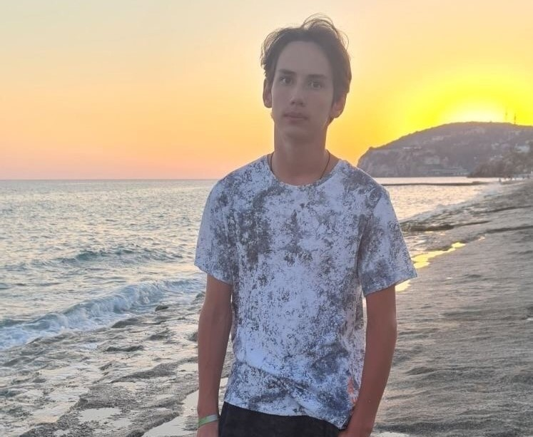

Команда Сибскана 2007
Команда Сибскана 2007
Даниил Якушко-1
Вратарь
День рождение- 1 августа 2007 года, 15 лет, в спорте 8 лет,
Любимая цитата:"Настоящий хоккеист должен видеть своих, чужих и блондинку в третьем ряду"
Юрий Сазонов-96
Вратарь
День рождение- 1 августа 2007 года, 15 лет, в спорте 8 лет,
Любимая цитата: "Перед покорением горы нужно взять на прицел вершину, однако не стоит забывать наслаждаться пейзажем."
Лев Кузьменков-30
Полузащитник
День рождение- 13 января 2007 года, 16 лет, в спорте 10 лет,
Любимая цитата: "Я думаю о победе. Ведь выход есть из любой ситуации. Даже если проигрываем, есть шанс, что на последней секунде упадёт метеор."
Влас Галяткин-35
Полузащитник
День рождение- 14 апреля 2008 года, 15 лет, в спорте 8 лет,
Любимая цитата: "Те, кто прознали страх поражения, жаждут победы"
Павел Перфильев-44
Командир команды, защитник
День рождение- 12 июля 2007 года, 15 лет, в спорте 9 лет,
Любимая цитата: "Если ты остался прежним, значит ты не стал лучше."
Ростислав Карачун-12
Защитник
День рождение- 20 июля 2007 года, 15 лет, в спорте 10 лет,
Любимая цитата: "Жизнь - это всегда вызов. В ней нет смысла, если у тебя нет сильного противника."

Владимир Барансуков-18
Защитник
День рождение- 29 июня 2007 года, 15 лет, в спорте 10 лет,
Любимая цитата: "Когда мы оказываемся по уши в дерьме, твоя голова выдает отличные идеи."
Леонид Казаринов-17
Нападающий
День рождение- 15 марта 2007 года, 16 лет, в спорте 10 лет,
Любимая цитата: "Порой один простой пример убедительнее сотни красивых проповедей."
Баженов Алексей Анатольевич
Главный тренер Сибскана 2007
День рождение- 8 августа 1971 года, 51 год
Советский, российский и казахстанский игрок в хоккей с мячом, вратарь, тренер, мастер спорта России, мастер спорта Республики Казахстан международного класса.
Межуев Александр Владимирович
Второй тренер
День рождение- 28 февраля 1970 года, 53 года
Главный тренер женской сборной России по хоккею с мячом, а также старший тренер спортивной школы по хоккею с мячом «Сибскана».
{kind=link}
{kind=link}
{kind=link}
{kind=link}
{kind=link}
{kind=link}
{kind=link}
{kind=link}
{kind=link}
{kind=link}
{kind=link}
{kind=link}